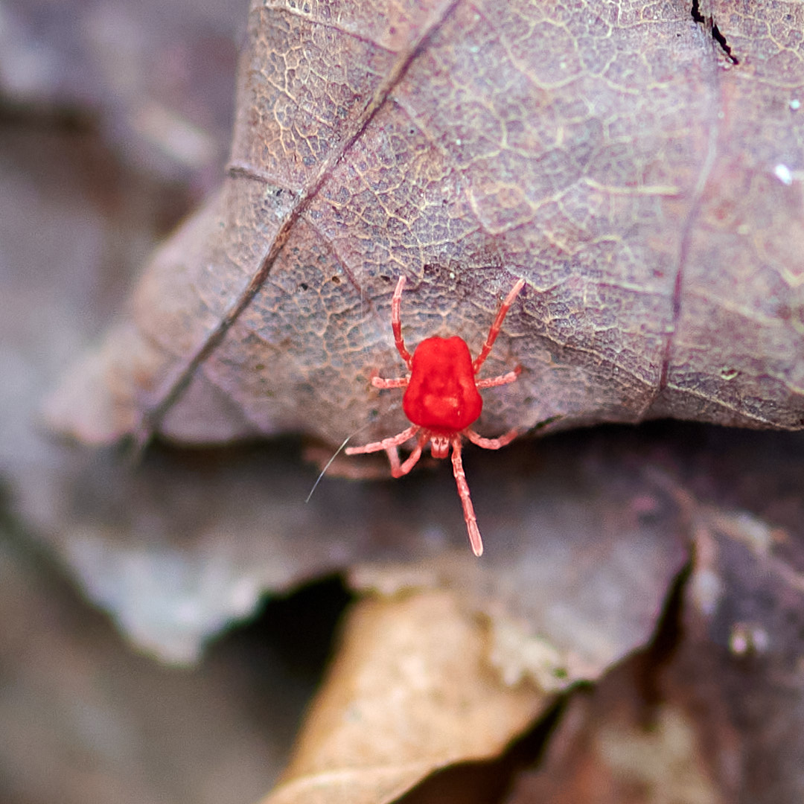
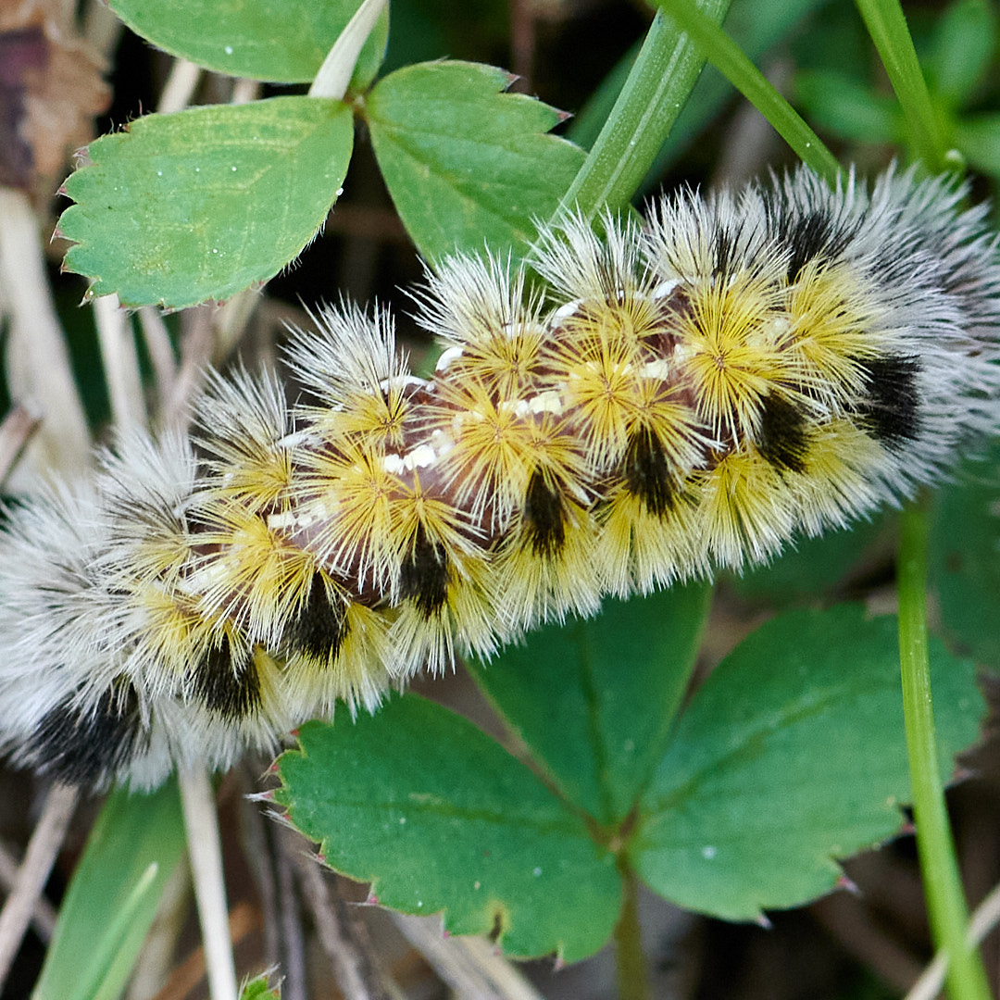
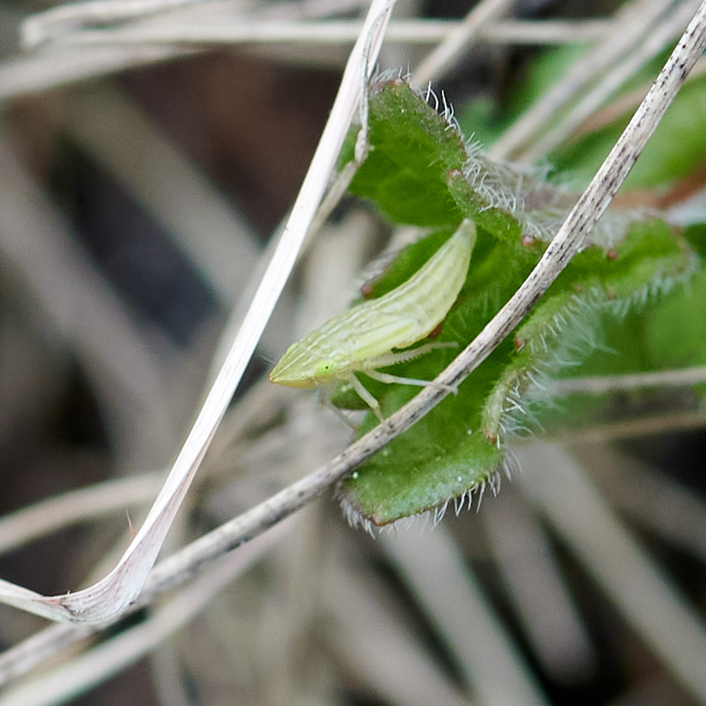
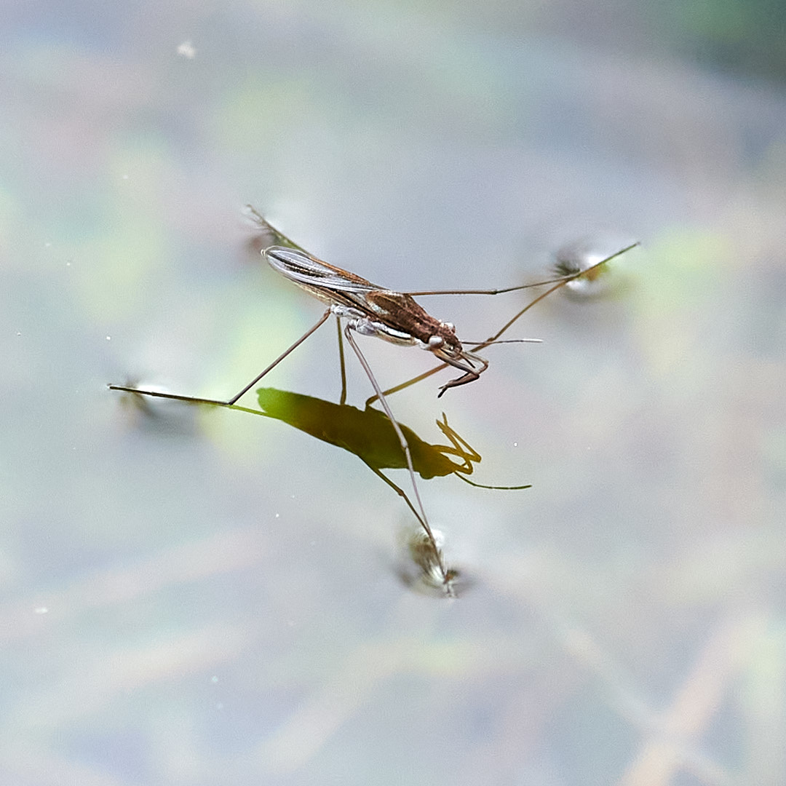
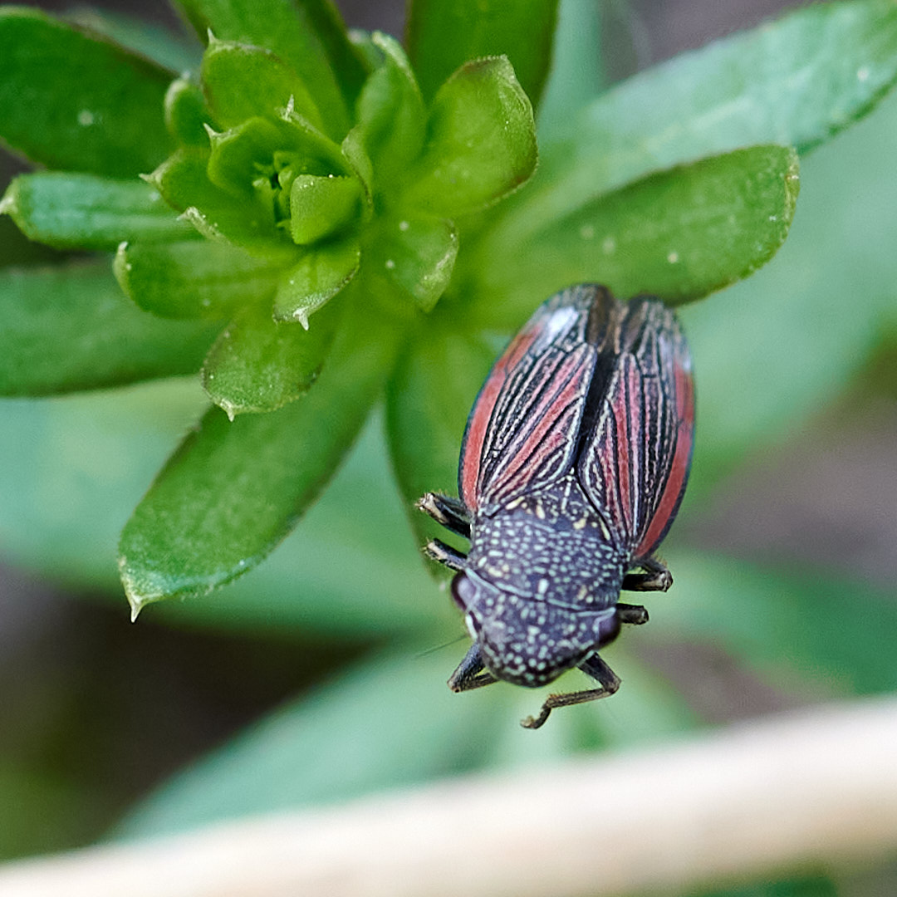
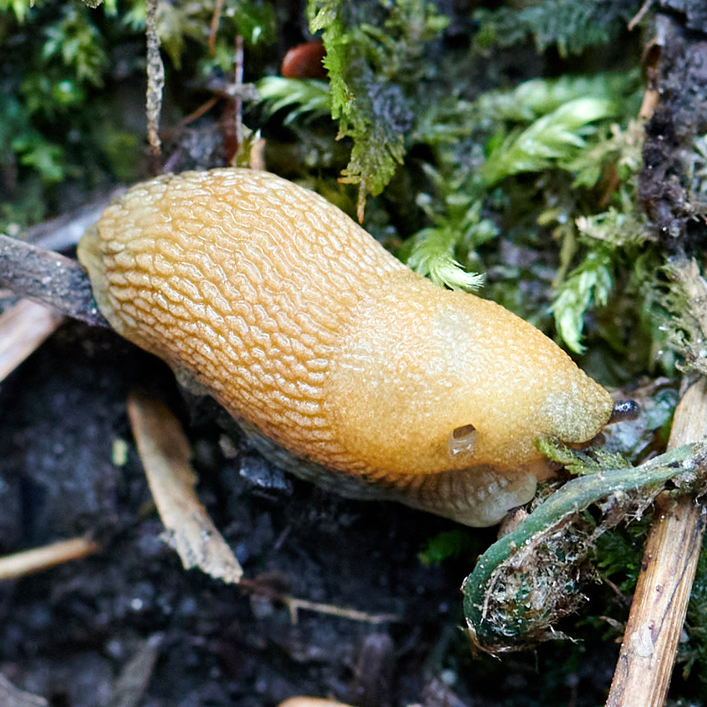
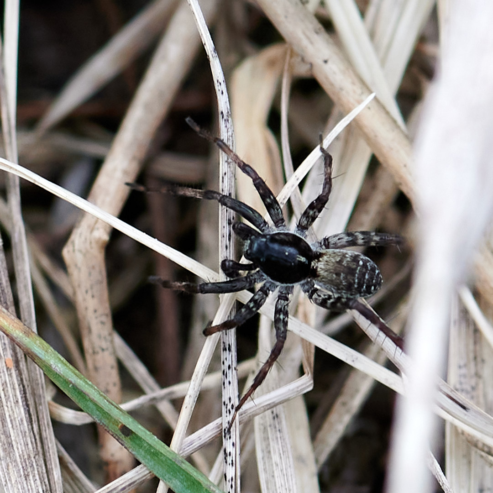
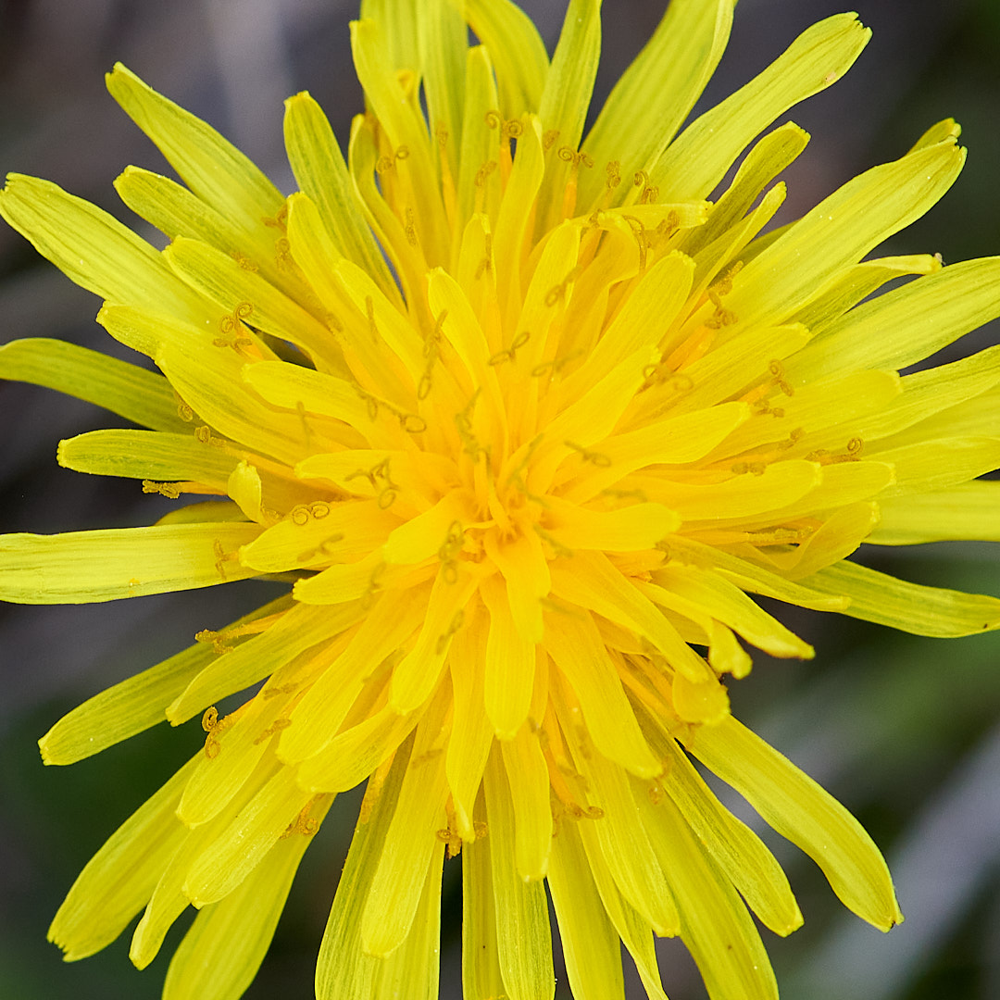

Springtime in Vermont is nice because the sun is warm again and the snow goes away and the animals reappear and the plants come back to life.
Here is some small nature from early May:
A clover mite treks last year's leaves 
A caterpillar wiggles through wild strawberries 
A little green bug rests before leaping off again to who-knows-where 
A pond strider takes a moment to reflect on life 
I am not sure what this bug is thinking, but it sure is pretty 
A slug eats well 
A spider stalks in tall grass 
A flower blooms 
Thanks for watching. Have a good one.